Construct a volcano plot
plotVolcano.RdConstruct a volcano plot
Usage
plotVolcano(
res,
logFCCol = NULL,
pvalCol = NULL,
padjCol = NULL,
padjThreshold = 0.05,
pointSize = "small",
interactivePlot = FALSE,
nTopToLabel = 0
)Arguments
- res
data.frame(typically output fromcalculateRelativeFC()) with columns corresponding to the log-fold change (logFC), p-value (PValueorP.Value) and significance (FDRoradj.P.Val).- logFCCol, pvalCol, padjCol
Character scalars indicating the columns from
resthat will be used to represent the logFC (x-axis), p-value (y-axis) and adjusted p-value (used for coloring). IfNULL(default), pre-specified values will be used depending on the available columns ("logFC","PValue"or"P.Value", and"FDR"or"adj.P.Val", respectively).- padjThreshold
Numeric scalar indicating the adjusted p-value threshold to use for coloring the points. All features with adjusted p-value below the treshold will be shown in red.
- pointSize
Either
"small"or"large", indicating which of the two available plot styles that will be used.- interactivePlot
Logical scalar, indicating whether an interactive plot should be returned, in which one can hover over the individual points and obtain further information.
- nTopToLabel
Numeric scalar, indicating the number of points that should be labeled in the plot. The points will be ranked by the
pvalColcolumn, and the topnTopToLabelvalues will be labeled by the corresponding row names. Only used ifinteractivePlotisFALSE.
Examples
se <- readRDS(system.file("extdata", "GSE102901_cis_se.rds",
package = "mutscan"))[1:200, ]
design <- model.matrix(~ Replicate + Condition,
data = SummarizedExperiment::colData(se))
res <- calculateRelativeFC(se, design, coef = "Conditioncis_output")
plotVolcano(res, pointSize = "large", nTopToLabel = 3)
